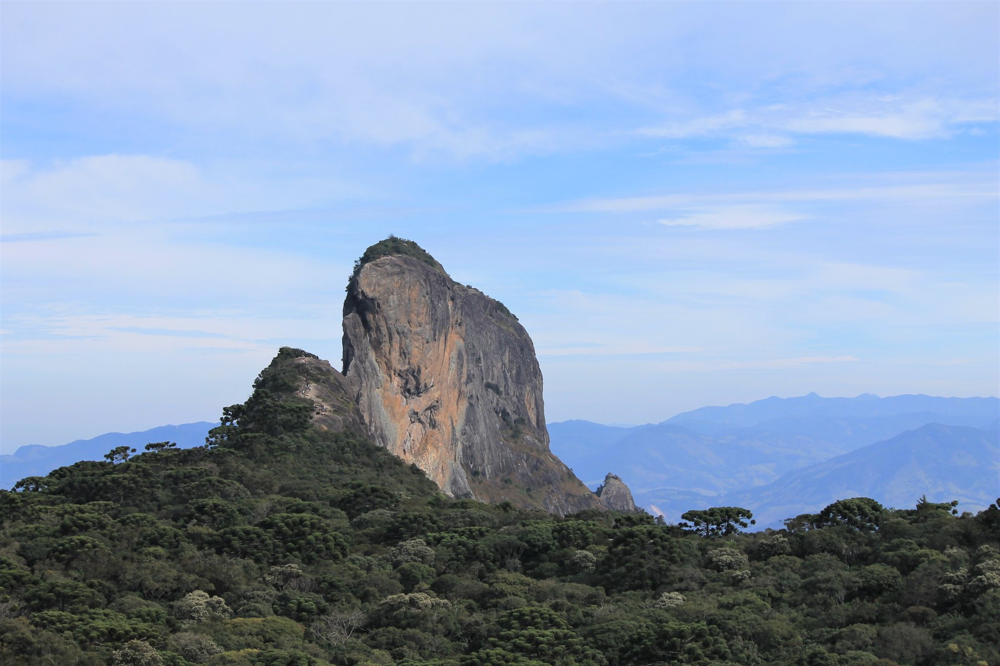
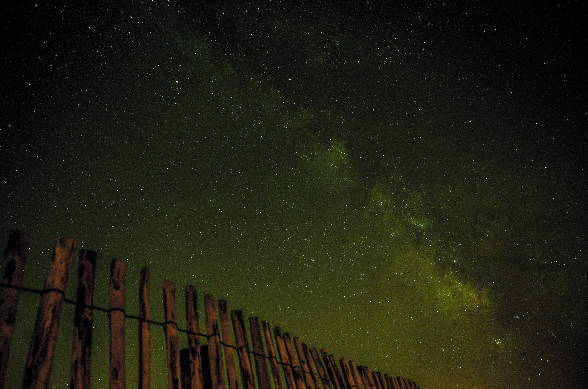

Água & mata · Sapucaí-Mirim
Cachoeira da Amizade
Uma pausa perto da cidade: água, pedras e verde para começar o sábado.

Quatro dias na Mantiqueira.
Cachoeiras de dia, Via Láctea à noite.
Uma sugestão flexível, com espaço para o clima.
Os horários abaixo são de planejamento.
12/10 é feriado nacional. Combine refeições e passeios com antecedência e reserve margem para o trânsito.
Abra os cards para ver acesso, cuidados
e o caminho no mapa.
Uma pausa perto da cidade: água, pedras e verde para começar o sábado.
O grande clássico da Mantiqueira. Domingo de vistas amplas e trilha.
Um mirante para conhecer outro ângulo das montanhas, como alternativa ao Baú.
Uma alternativa para contemplar a queda e a mata, com tempo e acesso confirmados.
Corredeiras e piscina natural: outra opção para um sábado sem pressa.
Uma caminhada, lojinhas e a primeira vista do fim de tarde.
São Bento amplia as possibilidades. Vale levar lanches para as trilhas e combinar o jantar antes de sair para fotografar.
Mercados no mapa
Via Láctea · imagem de inspiração, não registrada na regiãoLua Nova em 10 de outubro, às 12h50 (horário de Brasília). Pouca interferência lunar nas noites da viagem — o céu limpo ainda decide o espetáculo.
Reconheça de dia um ponto próximo à hospedagem, com permissão, piso seguro e longe das luzes do centro. Prefira horizonte oeste/sudoeste livre. Não conte com entrada noturna no parque do Baú.
Outubro encerra a temporada do núcleo galáctico. Reserve o começo da noite e monte tudo ao entardecer. Confira direção e janela exatas no Stellarium ou PhotoPills para o local escolhido.
Ponto de partida: RAW, modo manual, lente ampla, f/2.8 ou mais aberta, ISO 1600–3200 e 10–20 s. Faça foco em uma estrela e ajuste o tempo para evitar rastros. Os valores dependem da câmera e lente.
Plano B: se estiver nublado, jantar tranquilo e descanso. Aproveite a primeira noite aberta entre 9, 10 e 11; não espere apenas o sábado.
01 · AcessoConfirme estrada, guia, horários e autorização em propriedades privadas. Salve os mapas para usar sem sinal.
02 · ClimaConsulte a previsão perto da viagem. Troque trilhas e cachoeiras em caso de chuva ou tempestade.
03 · RefeiçõesReserve o feriado e confirme os ingredientes. Leve lanches para não depender de uma única opção.